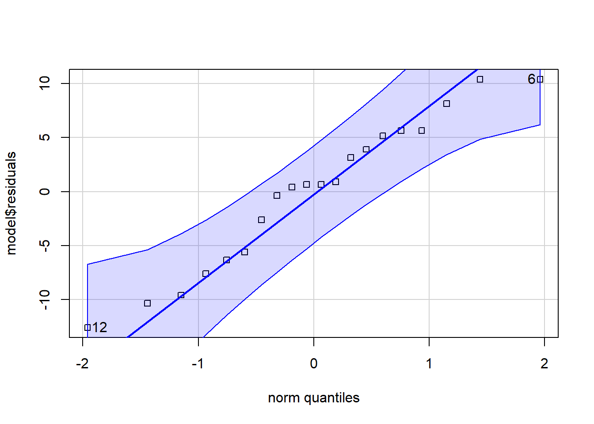
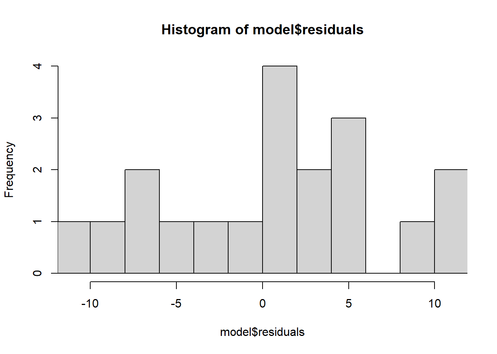
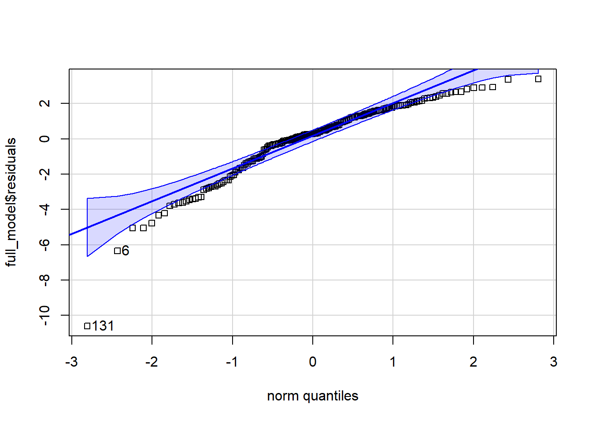
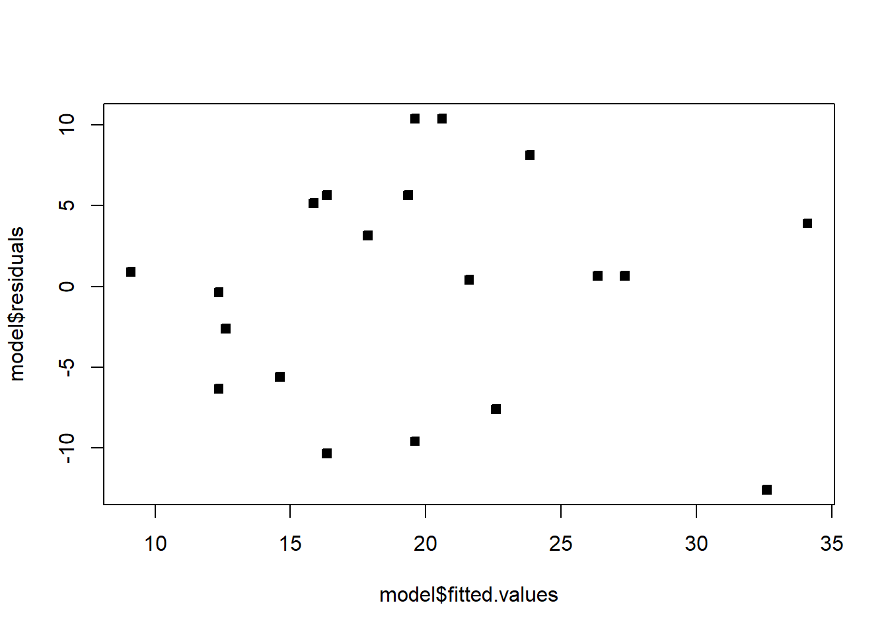
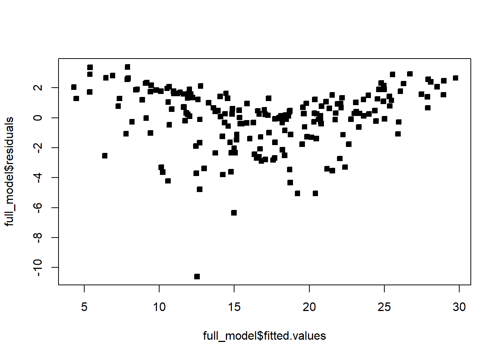
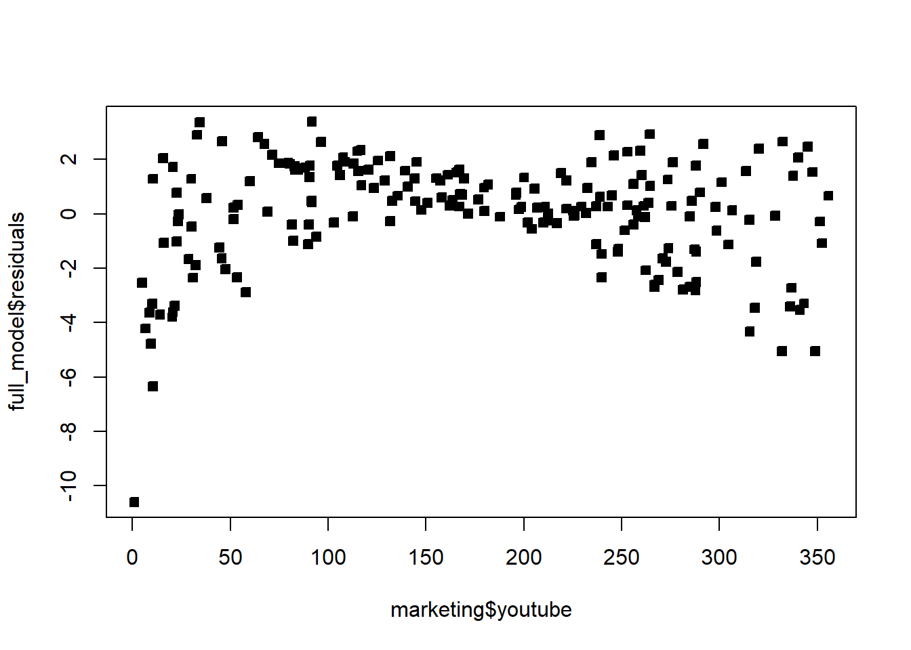
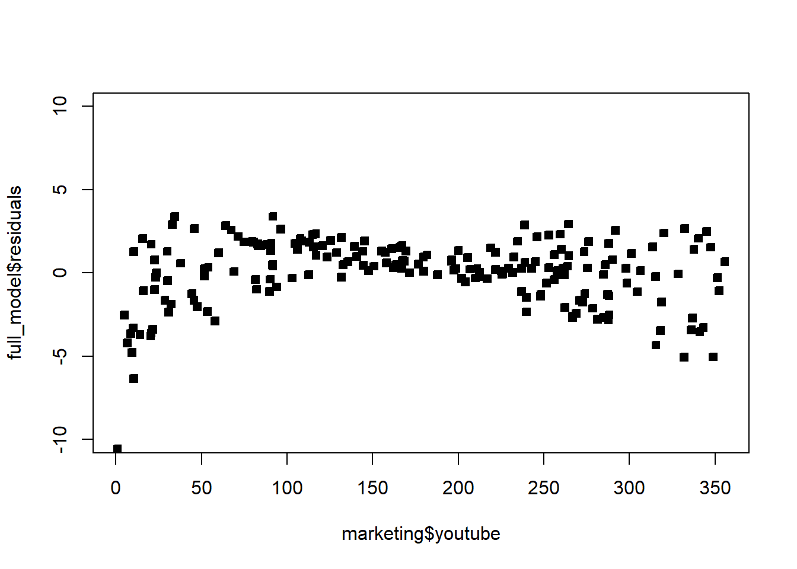
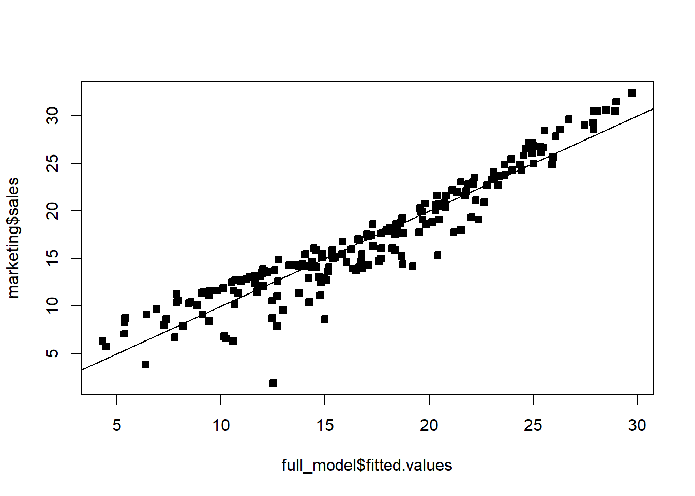

8 Checking model assumptions
Every confidence interval, hypothesis test, and prediction interval from 3.3 is only valid to the extent that the model assumptions actually hold: (1) the relationship is linear, \(Y|X=X\beta+\epsilon\); (2) \(\epsilon_i\sim\mathcal{N}(0,\sigma^2)\) for all \(i\) (constant variance and Normality); (3) \(\epsilon_i\perp\epsilon_j\) for \(i\neq j\). This section briefly introduces how to use the data to check whether these assumptions are reasonable — we’ll return to this in much more depth in a later chapter.
8.1 Checking normality
We never observe \(\epsilon\), but we do observe the residuals \(\hat\epsilon\) — our best available proxy for the true errors. To check whether \(\epsilon\) looks Normal, we examine whether \(\hat\epsilon\) looks Normal, using histograms and quantile-quantile (QQ) plots.
A QQ plot compares the sample’s quantiles (y-axis) against the quantiles a perfect Normal sample would have (x-axis, “theoretical quantiles”). If the residuals really are Normal, the points fall close to a straight line. Departures have specific shapes worth recognizing: points curving away from the line at both ends (heavy tails) suggest more extreme values than Normal predicts; an S-shape suggests a lighter-tailed, more concentrated distribution than Normal. Some wiggle at the very ends is normal even for genuinely Normal data — the extremes of any finite sample are noisy — so don’t over-read a couple of stray points at the tips.
Example 3.9 Check the normality assumption for the body fat model (Example 3.1) and for the marketing model (Example 3.7).
model = lm(BodyFat ~ Weight, data = df)
car::qqPlot(model$residuals, pch = 22)
hist(model$residuals, breaks = 10, xlim = c(-11, 11))

The QQ plot points sit close to the reference line and the histogram is roughly bell-shaped — this looks okay; normality seems like a reasonable assumption here.
full_model = lm(sales ~ youtube + facebook + newspaper, data = marketing)
car::qqPlot(full_model$residuals, pch = 22)
This is not great — the residuals curve noticeably away from the reference line, especially at the low end, suggesting the errors are not well-approximated by a Normal distribution here. We’ll see below that this ties back to a deeper problem with the marketing model.
8.2 Checking the other assumptions
Constant variance, independence, and (zero-mean) linearity are checked with other diagnostic plots.
8.2.1 Residuals vs. fitted values
Plotting fitted values \(\hat Y\) (x-axis) against residuals \(\hat\epsilon\) (y-axis) checks whether the error distribution depends on the fitted value. If the assumptions hold, we expect residuals to form a horizontal band centered at 0, with roughly constant spread, at every level of \(\hat Y\) — no trend, no funnel shape, no curve.
plot(model$fitted.values, model$residuals, pch = 22, bg = 1)
This looks fine for the body fat model — no obvious pattern.
plot(full_model$fitted.values, full_model$residuals, pch = 22, bg = 1)
The marketing model’s residuals show a clear pattern — a curved shape rather than a flat band. This typically signals either a nonlinear relationship with a covariate, or an important missing covariate; either way, the “identically distributed errors” assumption looks violated here.
8.2.2 Residuals vs. individual covariates
Plotting residuals against each covariate (or against time, if time is a covariate) can reveal dependence the fitted-vs-residual plot might hide. Again we want a horizontal band centered at 0; any visible relationship indicates a problem.
plot(marketing$youtube, full_model$residuals, pch = 22, bg = 1)
Be careful about your plot’s axis limits — they can distort your interpretation. Zooming out too far (or too close) can make a real problem look fine, or vice versa, and a \(y\)-axis that isn’t centered at 0 can visually exaggerate or hide a trend. Compare the plot above to the same data with a fixed ylim:
plot(marketing$youtube, full_model$residuals, pch = 22, bg = 1, ylim = c(-10, 10))
With a consistent, sensible scale, it becomes clearer that the spread of the residuals is changing with the covariate’s value (a funnel shape) — a constant-variance violation that was harder to judge on the auto-scaled version. Always fix your axis limits deliberately when comparing several such plots to each other, rather than trusting each plot’s default scaling.
8.2.3 Fitted values vs. the actual response
Plotting fitted values against the actual response gives a sense of overall fit — points should scatter around the line \(y=x\).
plot(full_model$fitted.values, marketing$sales, pch = 22, bg = 1)
abline(0, 1)
The points curve slightly above the \(y=x\) line at both the high and low ends — at extreme spending levels, actual sales are systematically higher than the (linear) model predicts. This is consistent with what the residual plots already suggested: YouTube and Facebook spending appear to have a nonlinear relationship with sales, which a plain linear model can’t capture. We’ll see how to address this (transformations, polynomial terms, and related fixes) in a later chapter.
R’s plot() function, applied directly to a fitted model object (plot(full_model)), automatically produces a standard set of four diagnostic plots (residuals vs. fitted, a Normal QQ plot, a scale-location plot, and residuals vs. leverage) — a quick way to run through several of these checks at once, without building each plot by hand.
- Every inference method from 3.3 assumes linearity, Normal errors, constant variance, and independent errors — always check these before trusting a \(p\)-value or interval.
- Residuals \(\hat\epsilon\), not the unobservable \(\epsilon\), are what we actually check — via histograms/QQ plots for Normality, and scatterplots (against fitted values, against covariates, against time) for constant variance and independence.
- A “good” diagnostic plot looks like a structureless, constant-width horizontal band centered at 0; curves, funnels, or trends all indicate an assumption violation.
- Plot scale matters — a poorly chosen axis range can hide or exaggerate a real pattern, so fix axis limits deliberately when comparing plots.
- In the marketing example, several diagnostics agreed: non-Normal residuals, patterned residuals vs. fitted values, and curvature in fitted-vs-actual — all pointing to a nonlinear relationship the current (linear) model misses.
8.3 Check Your Understanding
Before checking your answers, list the assumptions of the normal MLR and, for each one, write down which diagnostic plot(s) from this page you’d use to check it.
Question 1. Why do we check the residuals \(\hat\epsilon\) for normality, rather than the true errors \(\epsilon\)?
Show answer
Because \(\epsilon\) is never observed — it depends on the unknown true \(\beta\). The residuals \(\hat\epsilon=Y-X\hat\beta\) are the closest observable proxy we have, computed using the estimated \(\hat\beta\) instead of the unknown true \(\beta\).
Question 2. In a QQ plot, what does it mean if the residual points curve noticeably away from the reference line at both ends?
Show answer
It suggests the residuals have heavier tails than a Normal distribution — more extreme values occur than a Normal distribution would predict — so the normality assumption looks questionable.
Question 3. What pattern should a residuals-vs-fitted-values plot show if the model’s assumptions hold? What does a funnel or curved shape indicate instead?
Show answer
It should look like a horizontal band of points centered at 0 with roughly constant spread, at every fitted value — no trend, curvature, or change in spread. A funnel shape indicates non-constant variance (variance changing with the fitted value); a curved shape suggests the true relationship isn’t linear, or an important covariate is missing.
Question 4. Why can changing a plot’s axis limits change your conclusion about whether an assumption is violated?
Show answer
Auto-scaled axes can visually compress or stretch patterns in a way that flatters or exaggerates them — zooming out too far can make a real funnel shape or trend look flat, and an off-center \(y\)-axis can hide whether residuals are actually centered at 0. Comparing plots fairly requires deliberately fixing consistent axis limits, not relying on each plot’s own auto-scaling.
Question 5. In the marketing example, what did the fitted-vs-actual-sales plot (\(y=x\) reference line) suggest was wrong with the linear model?
Show answer
The points curved above the \(y=x\) line at both high and low fitted values, meaning actual sales were systematically higher than predicted at the extremes — a sign that the true relationship between advertising spending and sales is nonlinear, which a straight-line model can’t capture.
Question 6. True or False: if the residuals-vs-fitted plot looks fine, you don’t need to check the residuals-vs-individual-covariate plots separately.
Show answer
False. A problem tied to one specific covariate (e.g. non-constant variance that only shows up against Facebook spending, not against the fitted values overall) can be diluted or hidden once everything is combined into a single fitted-value axis. Checking residuals against each covariate individually can reveal issues the aggregate fitted-vs-residual plot misses.